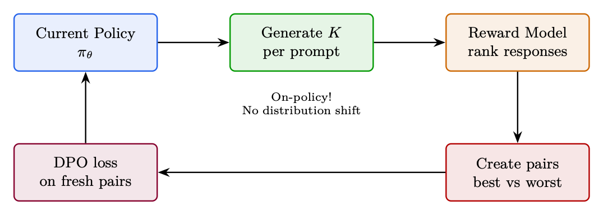

<!doctype html>
<html lang="zh-CN">
<head>
  <meta charset="utf-8" />
  <meta name="viewport" content="width=device-width, initial-scale=1" />
  <title>GRPO：组相对策略优化 | 智能体式 AI 漫游指南</title>
  <meta name="description" content="介绍面向推理模型的组相对优化、可验证奖励和采样策略。" />
  <meta property="og:title" content="GRPO：组相对策略优化 | 智能体式 AI 漫游指南" />
  <meta property="og:description" content="介绍面向推理模型的组相对优化、可验证奖励和采样策略。" />
  <meta property="og:type" content="article" />
  <link rel="canonical" href="https://conanxin.github.io/hitchhikers-guide-agentic-ai-zh/" />
  <link rel="stylesheet" href="../assets/css/main.css" />
  <link rel="stylesheet" href="../assets/css/article.css" />
  <link rel="stylesheet" href="../assets/css/responsive.css" />
</head>
<body class="article-page">
  <div class="reading-progress" id="reading-progress"></div>
  <header class="topbar">
    <a class="brand" href="../index.html"><span class="brand-mark">AST</span><span><strong>智能体式 AI 漫游指南</strong><small>结构化知识文档系统</small></span></a>
    <button class="nav-toggle" id="nav-toggle" aria-label="打开导航" aria-expanded="false"><span></span><span></span><span></span></button>
    <nav class="topnav" id="topnav"><a class="" href="../index.html">首页</a><a class="active" href="../chapters/index.html">章节</a><a class="" href="../glossary.html">术语表</a><a class="" href="../references.html">参考文献</a><a class="" href="../search.html">搜索</a><a class="" href="https://arxiv.org/pdf/2606.24937v1" target="_blank" rel="noopener">原 PDF</a></nav>
  </header>
  <main class="layout"><aside class="left-nav" id="left-nav"><div class="nav-section-title">语义目录</div><div class="nav-cluster"><strong>导读</strong><a class="chapter-link " href="../chapters/chapter-01.html"><span class="chapter-num">01</span><span>导读与前置说明</span></a><a class="chapter-link " href="../chapters/chapter-09.html"><span class="chapter-num">09</span><span>偏好优化变体</span></a></div><div class="nav-cluster"><strong>LLM 基础与系统</strong><a class="chapter-link " href="../chapters/chapter-02.html"><span class="chapter-num">02</span><span>LLM 架构和优化方法</span></a><a class="chapter-link " href="../chapters/chapter-03.html"><span class="chapter-num">03</span><span>LLM 的系统基础</span></a><a class="chapter-link " href="../chapters/chapter-12.html"><span class="chapter-num">12</span><span>大规模系统架构与基础设施</span></a></div><div class="nav-cluster"><strong>训练、强化学习与对齐</strong><a class="chapter-link " href="../chapters/chapter-04.html"><span class="chapter-num">04</span><span>强化学习简介</span></a><a class="chapter-link " href="../chapters/chapter-05.html"><span class="chapter-num">05</span><span>语言模型的强化学习基础</span></a><a class="chapter-link " href="../chapters/chapter-06.html"><span class="chapter-num">06</span><span>PPO：近端策略优化</span></a><a class="chapter-link " href="../chapters/chapter-07.html"><span class="chapter-num">07</span><span>DPO：直接偏好优化</span></a><a class="chapter-link active" href="../chapters/chapter-08.html"><span class="chapter-num">08</span><span>GRPO：组相对策略优化</span></a><a class="chapter-link " href="../chapters/chapter-10.html"><span class="chapter-num">10</span><span>奖励模型训练</span></a><a class="chapter-link " href="../chapters/chapter-11.html"><span class="chapter-num">11</span><span>SFT 最佳实践与技术</span></a><a class="chapter-link " href="../chapters/chapter-14.html"><span class="chapter-num">14</span><span>大型推理模型的强化学习</span></a></div><div class="nav-cluster"><strong>Agentic AI 系统</strong><a class="chapter-link " href="../chapters/chapter-13.html"><span class="chapter-num">13</span><span>LLM 智能体训练</span></a><a class="chapter-link " href="../chapters/chapter-16.html"><span class="chapter-num">16</span><span>智能体式 AI 简介</span></a><a class="chapter-link " href="../chapters/chapter-17.html"><span class="chapter-num">17</span><span>检索增强生成（RAG）</span></a><a class="chapter-link " href="../chapters/chapter-18.html"><span class="chapter-num">18</span><span>智能体记忆系统</span></a><a class="chapter-link " href="../chapters/chapter-19.html"><span class="chapter-num">19</span><span>智能体执行框架：上下文管理与编排</span></a><a class="chapter-link " href="../chapters/chapter-20.html"><span class="chapter-num">20</span><span>智能体设计模式</span></a><a class="chapter-link " href="../chapters/chapter-21.html"><span class="chapter-num">21</span><span>智能体环境与基准</span></a><a class="chapter-link " href="../chapters/chapter-22.html"><span class="chapter-num">22</span><span>模型上下文协议（MCP）</span></a><a class="chapter-link " href="../chapters/chapter-23.html"><span class="chapter-num">23</span><span>智能体技能</span></a><a class="chapter-link " href="../chapters/chapter-24.html"><span class="chapter-num">24</span><span>智能体间通信（A2A）</span></a><a class="chapter-link " href="../chapters/chapter-25.html"><span class="chapter-num">25</span><span>多智能体系统</span></a><a class="chapter-link " href="../chapters/chapter-26.html"><span class="chapter-num">26</span><span>智能体开发框架</span></a><a class="chapter-link " href="../chapters/chapter-27.html"><span class="chapter-num">27</span><span>智能体式 UI 框架</span></a></div><div class="nav-cluster"><strong>推理与评估</strong><a class="chapter-link " href="../chapters/chapter-15.html"><span class="chapter-num">15</span><span>LLM 评估</span></a></div><div class="nav-cluster"><strong>参考与总结</strong><a class="chapter-link " href="../chapters/chapter-28.html"><span class="chapter-num">28</span><span>测验题与详解</span></a><a class="chapter-link " href="../chapters/chapter-29.html"><span class="chapter-num">29</span><span>速查表</span></a><a class="chapter-link " href="../chapters/chapter-30.html"><span class="chapter-num">30</span><span>结论与未来方向</span></a></div></aside><section class="content-shell">
        <article class="article-card" data-ast-source="../assets/data/clean_chapter_tree.json">
          <header class="article-header">
            <p class="part-label">训练、强化学习与对齐</p>
            <h1>GRPO：组相对策略优化</h1>
            <p>介绍面向推理模型的组相对优化、可验证奖励和采样策略。</p>
          </header>
          <aside class="component key-concepts-panel"><span class="component-label">Key Concepts</span><div class="concept-chip"><strong>智能体</strong><span>Agent</span><p>能够感知状态、规划行动、调用工具并迭代完成任务的系统单元。</p></div><div class="concept-chip"><strong>标记 / token</strong><span>Token</span><p>语言模型处理文本的基本离散单位。</p></div><div class="concept-chip"><strong>Transformer</strong><span>Transformer</span><p>以自注意力为核心的序列建模架构。</p></div><div class="concept-chip"><strong>注意力</strong><span>Attention</span><p>根据查询、键和值计算上下文加权表示的机制。</p></div><div class="concept-chip"><strong>强化学习</strong><span>Reinforcement Learning</span><p>通过奖励信号优化策略的学习范式。</p></div><div class="concept-chip"><strong>奖励模型</strong><span>Reward Model</span><p>把候选输出映射为偏好或质量分数的模型。</p></div><div class="concept-chip"><strong>策略</strong><span>Policy</span><p>在状态下选择动作或生成 token 的概率分布。</p></div><div class="concept-chip"><strong>轨迹</strong><span>Trajectory</span><p>智能体与环境交互形成的状态、动作、观察和奖励序列。</p></div></aside>
          <div class="article-body"><section class="ast-section" id="chapter-08-s01"><div class="component section-overview"><div><span class="component-label">Section Overview</span><h2>动机</h2><p>本节聚焦“动机”的定义、机制与工程含义。</p></div><div class="mini-concepts"><div class="concept-chip"><strong>智能体</strong><span>Agent</span><p>能够感知状态、规划行动、调用工具并迭代完成任务的系统单元。</p></div><div class="concept-chip"><strong>强化学习</strong><span>Reinforcement Learning</span><p>通过奖励信号优化策略的学习范式。</p></div><div class="concept-chip"><strong>策略</strong><span>Policy</span><p>在状态下选择动作或生成 token 的概率分布。</p></div><div class="concept-chip"><strong>推理</strong><span>Inference</span><p>模型在部署或测试时生成输出的过程。</p></div><div class="concept-chip"><strong>近端策略优化（PPO）</strong><span>PPO</span><p>通过裁剪目标限制策略更新幅度的强化学习算法。</p></div></div></div><div class="section-blocks"><p class="content-block paragraph">GRPO — Group Relative Policy 优化</p><p class="content-block paragraph">组相对策略优化（GRPO）[14]是一种强化学习算法，设计 专门针对语言模型，无需单独的价值网络（批评家）。 由 DeepSeek 作为其 DeepSeekMath 工作的一部分引入，后来扩展到 DeepSeek-R1 [15]， GRPO 已迅速成为 LLM 训练的主要 RL 方法 - 被大多数开源公司采用 对齐框架（TRL、OpenRLHF、veRL）作为默认算法。 核心思想看似简单：不是训练神经网络来预测预期 奖励（PPO 中的批评家），GRPO 通过对奖励产生多个响应来根据经验估计奖励 相同的提示并使用小组的奖励统计数据作为基线。这会删除整个模型 根据记忆，工程复杂性减半，而且令人惊讶的是，它的性能常常优于 PPO，因为 经验基线比训练不良的价值函数更准确。 GRPO 对于以下方面特别有效：</p><p class="content-block paragraph">• 具有可验证奖励（数学、代码）的推理任务，其中二进制正确性提供了 clean signal.</p><p class="content-block paragraph">• 大型模型（70B+），其中删除批评者所节省的内存至关重要。</p><p class="content-block paragraph">• 多轮和智能体设置，其中跨工具调用的价值估计很棘手。</p><p class="content-block paragraph">本章涵盖 GRPO 的动机、算法、关键变体（Dr. GRPO、DAPO、2-GRPO、 GDPO），以及 TRL 的实际实施。</p><p class="content-block paragraph">PPO的价值模型（批评家）对于语言来说存在三大问题：</p><p class="content-block paragraph">1.内存：价值头共享策略主干（70B为140GB）。内存加倍如果 分开。</p><p class="content-block paragraph">2. 准确性：预测部分序列的预期奖励非常困难。价值 函数经常是错误的→错误的优点→错误的梯度方向。</p><p class="content-block paragraph">3.训练：Value head需要很多样本才能收敛。在早期强化学习期间，它会产生噪音 破坏政策学习稳定的预测。</p><p class="content-block paragraph">GRPO 的关键见解 [14]：不是学习 V(s)，而是从一组数据中凭经验估计它 样品。生成对相同提示的 G 响应，计算他们的奖励，并使用该组 统计数据作为基线。</p></div></section><section class="ast-section" id="chapter-08-s02"><div class="component section-overview"><div><span class="component-label">Section Overview</span><h2>算法</h2><p>本节聚焦“算法”的定义、机制与工程含义。</p></div><div class="mini-concepts"><div class="concept-chip"><strong>标记 / token</strong><span>Token</span><p>语言模型处理文本的基本离散单位。</p></div><div class="concept-chip"><strong>Transformer</strong><span>Transformer</span><p>以自注意力为核心的序列建模架构。</p></div><div class="concept-chip"><strong>注意力</strong><span>Attention</span><p>根据查询、键和值计算上下文加权表示的机制。</p></div><div class="concept-chip"><strong>推理</strong><span>Inference</span><p>模型在部署或测试时生成输出的过程。</p></div><div class="concept-chip"><strong>近端策略优化（PPO）</strong><span>PPO</span><p>通过裁剪目标限制策略更新幅度的强化学习算法。</p></div></div></div><div class="section-blocks"><div class="component formula-component" data-fallback="latex"><div class="block-label">公式</div><pre class="formula"><code>1. For each prompt x, sample G completions: {y1, . . . , yG} ∼πθ(·|x)</code></pre></div><div class="component formula-component" data-fallback="latex"><div class="block-label">公式</div><pre class="formula"><code>2. Score each: ri = R(x, yi)</code></pre></div><div class="component code-component"><div class="block-label">text</div><pre><code>3. Normalize within group: ˆAi = ri−µG</code></pre></div><p class="content-block paragraph">G 磷 j rj, σG = std({rj})</p><p class="content-block paragraph">σG 其中 µG = 1</p><p class="content-block paragraph">4. 利用这些优点应用 PPO 式剪辑更新</p><div class="component code-component"><div class="block-label">text</div><pre><code>^Ai = ri − µG</code></pre></div><figure class="component formula-component image-fallback"><div class="block-label">公式图</div><figcaption>公式图：原文档中的数学区域已用图像 fallback 保留。</figcaption></figure><p class="content-block paragraph">为什么群体标准化有效</p><p class="content-block paragraph">组平均值近似于 V(s)：如果您对同一提示采样了足够多的响应， 他们的平均奖励是预期奖励 = 价值函数的蒙特卡罗估计。 高于平均值 = 良好的举动：^Ai &gt; 0 表示此响应优于此提示的平均值。 加强它。 低于平均值 = 糟糕的举动：^Ai &lt; 0 意味着比平均水平更差。压制它。 归一化：除以 σG 确保优势在提示中具有尺度不变性 不同的奖励范围。</p><div class="component code-component"><div class="block-label">text</div><pre><code>DeepSeek-R1 突破 [15]：具有二元正确性奖励的纯 GRPO（如果 r = 1</code></pre></div><div class="component code-component"><div class="block-label">text</div><pre><code>回答正确，否则 r = 0）接受数学/代码训练自发形成的思维链</code></pre></div><p class="content-block paragraph">推理、自我验证和错误纠正——没有任何明确的指示。</p><div class="component code-component"><div class="block-label">text</div><pre><code>Figure 7.1: GRPO in action: G=5 responses are sampled for a single math prompt. Three are correct
(r=1), two are wrong (r=0). The group mean µG=0.6 acts as the baseline; correct responses receive positive
advantage (reinforced), wrong ones receive negative advantage (suppressed).</code></pre></div><p class="content-block paragraph">TRL实施</p><p class="content-block paragraph">下面显示了使用 Hugging Face TRL 的最小工作示例。</p><div class="component code-component"><div class="block-label">text</div><pre><code>from trl import
GRPOConfig , GRPOTrainer
from
transformers
import
AutoModelForCausalLM , AutoTokenizer</code></pre></div><div class="component code-component"><div class="block-label">text</div><pre><code>model = AutoModelForCausalLM . from_pretrained (&quot;Qwen/Qwen2 .5-7B-Instruct&quot;,</code></pre></div><div class="component code-component"><div class="block-label">text</div><pre><code>torch_dtype=torch.bfloat16 , attn_implementation =&quot; flash_attention_2 &quot;)
tokenizer = AutoTokenizer. from_pretrained (&quot;Qwen/Qwen2 .5-7B-Instruct&quot;)</code></pre></div><div class="component code-component"><div class="block-label">text</div><pre><code>grpo_config = GRPOConfig(</code></pre></div><div class="component code-component"><div class="block-label">text</div><pre><code>output_dir=&quot;./ grpo_output&quot;,
num_generations =8,
# G = group
size
temperature =1.0,
# High temp for
diversity
within
group
max_completion_length =2048 ,
# Max
response
length
beta =0.04 ,
# KL penalty
coefficient
learning_rate =1e-6,</code></pre></div><figure class="component figure-component"><figcaption>图示：来自原文档的结构、表格或公式区域。</figcaption></figure></div></section><section class="ast-section" id="chapter-08-s03"><div class="component section-overview"><div><span class="component-label">Section Overview</span><h2>TRL 实现</h2><p>本节聚焦“TRL 实现”的定义、机制与工程含义。</p></div><div class="mini-concepts"><div class="concept-chip"><strong>标记 / token</strong><span>Token</span><p>语言模型处理文本的基本离散单位。</p></div><div class="concept-chip"><strong>Transformer</strong><span>Transformer</span><p>以自注意力为核心的序列建模架构。</p></div><div class="concept-chip"><strong>注意力</strong><span>Attention</span><p>根据查询、键和值计算上下文加权表示的机制。</p></div><div class="concept-chip"><strong>推理</strong><span>Inference</span><p>模型在部署或测试时生成输出的过程。</p></div><div class="concept-chip"><strong>近端策略优化（PPO）</strong><span>PPO</span><p>通过裁剪目标限制策略更新幅度的强化学习算法。</p></div></div></div><div class="section-blocks"><div class="component formula-component" data-fallback="latex"><div class="block-label">公式</div><pre class="formula"><code>1. For each prompt x, sample G completions: {y1, . . . , yG} ∼πθ(·|x)</code></pre></div><div class="component formula-component" data-fallback="latex"><div class="block-label">公式</div><pre class="formula"><code>2. Score each: ri = R(x, yi)</code></pre></div><div class="component code-component"><div class="block-label">text</div><pre><code>3. Normalize within group: ˆAi = ri−µG</code></pre></div><p class="content-block paragraph">G 磷 j rj, σG = std({rj})</p><p class="content-block paragraph">σG 其中 µG = 1</p><p class="content-block paragraph">4. 利用这些优点应用 PPO 式剪辑更新</p><div class="component code-component"><div class="block-label">text</div><pre><code>^Ai = ri − µG</code></pre></div><figure class="component formula-component image-fallback"><div class="block-label">公式图</div><figcaption>公式图：原文档中的数学区域已用图像 fallback 保留。</figcaption></figure><p class="content-block paragraph">为什么群体标准化有效</p><p class="content-block paragraph">组平均值近似于 V(s)：如果您对同一提示采样了足够多的响应， 他们的平均奖励是预期奖励 = 价值函数的蒙特卡罗估计。 高于平均值 = 良好的举动：^Ai &gt; 0 表示此响应优于此提示的平均值。 加强它。 低于平均值 = 糟糕的举动：^Ai &lt; 0 意味着比平均水平更差。压制它。 归一化：除以 σG 确保优势在提示中具有尺度不变性 不同的奖励范围。</p><div class="component code-component"><div class="block-label">text</div><pre><code>DeepSeek-R1 突破 [15]：具有二元正确性奖励的纯 GRPO（如果 r = 1</code></pre></div><div class="component code-component"><div class="block-label">text</div><pre><code>回答正确，否则 r = 0）接受数学/代码训练自发形成的思维链</code></pre></div><p class="content-block paragraph">推理、自我验证和错误纠正——没有任何明确的指示。</p><div class="component code-component"><div class="block-label">text</div><pre><code>Figure 7.1: GRPO in action: G=5 responses are sampled for a single math prompt. Three are correct
(r=1), two are wrong (r=0). The group mean µG=0.6 acts as the baseline; correct responses receive positive
advantage (reinforced), wrong ones receive negative advantage (suppressed).</code></pre></div><p class="content-block paragraph">TRL实施</p><p class="content-block paragraph">下面显示了使用 Hugging Face TRL 的最小工作示例。</p><div class="component code-component"><div class="block-label">text</div><pre><code>from trl import
GRPOConfig , GRPOTrainer
from
transformers
import
AutoModelForCausalLM , AutoTokenizer</code></pre></div><div class="component code-component"><div class="block-label">text</div><pre><code>model = AutoModelForCausalLM . from_pretrained (&quot;Qwen/Qwen2 .5-7B-Instruct&quot;,</code></pre></div><div class="component code-component"><div class="block-label">text</div><pre><code>torch_dtype=torch.bfloat16 , attn_implementation =&quot; flash_attention_2 &quot;)
tokenizer = AutoTokenizer. from_pretrained (&quot;Qwen/Qwen2 .5-7B-Instruct&quot;)</code></pre></div><div class="component code-component"><div class="block-label">text</div><pre><code>grpo_config = GRPOConfig(</code></pre></div><div class="component code-component"><div class="block-label">text</div><pre><code>output_dir=&quot;./ grpo_output&quot;,
num_generations =8,
# G = group
size
temperature =1.0,
# High temp for
diversity
within
group
max_completion_length =2048 ,
# Max
response
length
beta =0.04 ,
# KL penalty
coefficient
learning_rate =1e-6,</code></pre></div><figure class="component figure-component"><figcaption>图示：来自原文档的结构、表格或公式区域。</figcaption></figure></div></section><section class="ast-section" id="chapter-08-s04"><div class="component section-overview"><div><span class="component-label">Section Overview</span><h2>组大小分析</h2><p>本节聚焦“组大小分析”的定义、机制与工程含义。</p></div><div class="mini-concepts"><div class="concept-chip"><strong>标记 / token</strong><span>Token</span><p>语言模型处理文本的基本离散单位。</p></div><div class="concept-chip"><strong>组相对策略优化（GRPO）</strong><span>GRPO</span><p>基于同一提示多条响应的组内相对优势进行优化的方法。</p></div><div class="concept-chip"><strong>旋转位置嵌入（RoPE）</strong><span>RoPE</span><p>通过旋转变换注入相对位置信息的位置编码方法。</p></div><div class="concept-chip"><strong>vLLM</strong><span>vLLM</span><p>使用 PagedAttention 等技术提升 LLM 服务效率的系统。</p></div></div></div><div class="section-blocks"><div class="component code-component"><div class="block-label">text</div><pre><code>per_device_train_batch_size =2,
# Prompts
per device (x8 gens = 16 responses)
gradient_accumulation_steps =8,
num_train_epochs =2,
bf16=True ,
gradient_checkpointing =True ,
max_grad_norm =0.5,
logging_steps =10,
# vLLM
generation
for speed (critical
for GRPO due to 8x generation)
use_vllm=True ,
vllm_gpu_memory_utilization =0.7 ,
)</code></pre></div><div class="component code-component"><div class="block-label">text</div><pre><code># Reward
function: binary
correctness
for math
def
reward_fn(completions , prompts , ** kwargs):
&quot;&quot;&quot;Return
list of floats: 1.0 if correct , 0.0 if wrong.&quot;&quot;&quot;
rewards = []
for completion , prompt in zip(completions , prompts):</code></pre></div><div class="component code-component"><div class="block-label">text</div><pre><code>answer = extract_answer (completion)
expected = get_ground_truth (prompt)
rewards.append (1.0 if answer == expected
else 0.0)
return
rewards</code></pre></div><div class="component code-component"><div class="block-label">text</div><pre><code># Can combine
multiple
reward
functions!
def
format_reward_fn (completions , ** kwargs):
&quot;&quot;&quot;Bonus for using
proper
LaTeX
formatting.&quot;&quot;&quot;
return
[0.5 if &quot;\\ boxed{&quot; in c else 0.0 for c in completions]</code></pre></div><div class="component code-component"><div class="block-label">text</div><pre><code>trainer = GRPOTrainer(</code></pre></div><div class="component code-component"><div class="block-label">text</div><pre><code>model=model ,
args=grpo_config ,
reward_funcs =[ reward_fn , format_reward_fn ],
# Multi -objective!
train_dataset=math_dataset ,
tokenizer=tokenizer ,
)
trainer.train ()</code></pre></div><p class="content-block paragraph">团体规模分析</p><p class="content-block paragraph">G 信号质量 计算 何时使用</p><p class="content-block paragraph">非常吵（抛硬币） 低 从来不推荐——太吵了 稳定学习</p><p class="content-block paragraph">中等 中等 快速实验，简单任务（通过 率 &gt; 50%）</p><p class="content-block paragraph">良好（标准） 高 默认。 对大多数人来说都有良好的平衡 任务</p><p class="content-block paragraph">优秀 非常高 困难任务（通过率&lt;20%），需要 多次尝试获得积极结果</p><p class="content-block paragraph">近乎完美 极限 仅当您拥有大量计算能力时 和非常艰巨的任务</p><p class="content-block paragraph">关键：团队必须包含成功和失败</p><div class="component code-component"><div class="block-label">text</div><pre><code>如果所有 G 响应都是正确的 (ri = 1 ∀i)：所有优势 = 0，没有学习信号！</code></pre></div><p class="content-block paragraph">如果全部错误：同样的问题。提示的难度必须与模型的能力相匹配。</p><p class="content-block paragraph">金发姑娘规则：将当前模型的通过率过滤到 20-80%。每 500 步重新过滤一次 随着模型的改进。</p></div></section><section class="ast-section" id="chapter-08-s05"><div class="component section-overview"><div><span class="component-label">Section Overview</span><h2>GRPO 变体与扩展</h2><p>本节聚焦“GRPO 变体与扩展”的定义、机制与工程含义。</p></div><div class="mini-concepts"><div class="concept-chip"><strong>智能体</strong><span>Agent</span><p>能够感知状态、规划行动、调用工具并迭代完成任务的系统单元。</p></div><div class="concept-chip"><strong>标记 / token</strong><span>Token</span><p>语言模型处理文本的基本离散单位。</p></div><div class="concept-chip"><strong>注意力</strong><span>Attention</span><p>根据查询、键和值计算上下文加权表示的机制。</p></div><div class="concept-chip"><strong>强化学习</strong><span>Reinforcement Learning</span><p>通过奖励信号优化策略的学习范式。</p></div><div class="concept-chip"><strong>奖励模型</strong><span>Reward Model</span><p>把候选输出映射为偏好或质量分数的模型。</p></div></div></div><div class="section-blocks"><p class="content-block paragraph">GRPO 变体和扩展</p><p class="content-block paragraph">GRPO 群体的多样性</p><p class="content-block paragraph">强化学习训练中的模式崩溃</p><p class="content-block paragraph">如果没有多样性压力，经过 RL 训练的LLM就会崩溃，只能做出有限的高回报反应：</p><p class="content-block paragraph">• 模型为每种问题类型学习一个“模板”答案</p><p class="content-block paragraph">• 熵迅速下降；模型变得确定性</p><p class="content-block paragraph">• 奖励黑客变得更容易（狭窄的输出更容易被利用）</p><p class="content-block paragraph">• 泛化能力受损：模型记住奖励模式，而不是推理</p><div class="component formula-component" data-fallback="latex"><div class="block-label">公式</div><pre class="formula"><code>The KL penalty βDKL[πθ∥πref] is the primary diversity mechanism, but it’s not sufficient alone.</code></pre></div><p class="content-block paragraph">GRPO 集团多元化</p><p class="content-block paragraph">GRPO 每个提示生成 N 个响应并使用组内排名。内部的多样性 群体很关键：</p><p class="content-block paragraph">• 高温（τ = 0.8–1.0）：确保不同的响应以进行有意义的比较</p><p class="content-block paragraph">• 大N (8–16)：更多样本=更有可能包括好的方法和坏的方法</p><p class="content-block paragraph">• DAPO 的“禁止重复”惩罚：拒绝组内的重复响应以强制 探索</p><p class="content-block paragraph">• 如果所有 N 个响应都相同：优势为零，没有学习信号</p><p class="content-block paragraph">• 如果响应过于多样化（随机）：奖励信号有噪音，学习速度慢</p><p class="content-block paragraph">最佳点：在保持主题的同时提供不同方法的温度。</p><p class="content-block paragraph">表 7.1：强化学习训练的多样性促进方法。</p><p class="content-block paragraph">方法 它如何促进多样性</p><p class="content-block paragraph">熵加成 将 αH(πθ) 添加到奖励中。直接惩罚低熵（阻止 部委）政策。 吉隆坡处罚 −βDKL[πθ∥πref] 防止向单一模式崩溃。 拒绝抽样 产生大量候选人，通过奖励保持top-k。自然选择 以获得多样化的高质量响应。 N 中最佳 推理时：生成 N 个响应，对所有响应进行评分，返回最佳响应。 多样性来自采样。 具有不同对的 DPO 对选择/拒绝的方法不同的配对进行训练，而不仅仅是 质量。 多重奖励 使用多种奖励模型（安全性、帮助性、代码质量）。 防止塌陷到一维。</p><p class="content-block paragraph">多样性与质量的权衡</p><p class="content-block paragraph">更多的多样性并不总是更好：</p><p class="content-block paragraph">• 太多的多样性（高熵）= 随机、无益的响应</p><p class="content-block paragraph">• 多样性太少（低熵）= 重复的、奖励被黑客攻击的响应</p><p class="content-block paragraph">• 监控：跟踪响应熵、独特的n-gram 比率和奖励分配宽度 训练期间。如果这三个同时下降，就会出现崩溃问题。</p><p class="content-block paragraph">用于 RL 数据收集的语言化采样</p><p class="content-block paragraph">训练后对齐（RLHF、DPO）通常会由于典型性偏差而降低输出多样性：人类 注释者系统地更喜欢熟悉的“典型”文本，而不是新颖的替代文本。此模式崩溃 是一种数据层面的现象，而不是纯粹的算法。 言语采样（VS）[111]是一种无需训练的提示策略，可以避免这种崩溃 通过要求模型明确地表达多个响应的概率分布 在一代人的时间内。</p><p class="content-block paragraph">言语化采样——核心理念</p><p class="content-block paragraph">提示模型输出，而不是对单个响应进行采样（这会折叠到众数） 多个候选者的响应及其概率： “生成 5 个关于咖啡的笑话及其相应的概率。” 该模型生成一个如下列表：</p><p class="content-block paragraph">1.笑话A（概率：0.35）</p><p class="content-block paragraph">2.笑话B（概率：0.25）</p><p class="content-block paragraph">3.笑话C（概率：0.20）</p><p class="content-block paragraph">4.笑话D（概率：0.12）</p><p class="content-block paragraph">5.笑话E（概率：0.08）</p><p class="content-block paragraph">然后从这个言语分布中采样。 因为该模型明确表示 完全分布（不仅仅是 argmax），概率较低但具有创造性/多样化的响应变得 可以访问。</p><div class="component code-component"><div class="block-label">text</div><pre><code># Verbalized
Sampling: prompt
model to output
distribution
def
verbalized_sample (model , tokenizer , task , n=5):
prompt = (</code></pre></div><div class="component code-component"><div class="block-label">text</div><pre><code>f&quot;{task }\n\n&quot;
f&quot;Generate {n} different
responses
and assign a probability &quot;
f&quot;to each (probabilities
should sum to 1.0). &quot;
f&quot;Format: [response] (probability: X.XX)&quot;
)
output = model.generate(</code></pre></div><div class="component code-component"><div class="block-label">text</div><pre><code>tokenizer(prompt , return_tensors =&quot;pt&quot;).input_ids ,
max_new_tokens =1024 ,
temperature =0.7,
do_sample=True ,
)
# Parse
responses
and
probabilities
from
output
responses , probs = parse_verbalized_distribution (</code></pre></div><div class="component code-component"><div class="block-label">text</div><pre><code>tokenizer.decode(output [0])
)
# Sample
from the
verbalized
distribution
import
random
chosen = random.choices(responses , weights=probs , k=1) [0]
return
chosen</code></pre></div><p class="content-block paragraph">为什么语言化抽样有效</p><p class="content-block paragraph">• 绕过模式崩溃：从高度集中的对齐模型中进行标准采样 一个或两个“安全”的反应。 VS 迫使模型阐明它知道的替代方案，但是 通常不会出现。</p><p class="content-block paragraph">• 多样性是语义性的：与温度缩放（词汇噪声）不同，VS 真正产生 不同的方法——模型对不同的选择进行推理。</p><p class="content-block paragraph">• 随能力扩展： 更强大的模型可以产生更好校准的语言</p><p class="content-block paragraph">分布——他们从 VS 中受益更多（创意写作中的多样性增益为 1.6–2.1 倍）。</p><p class="content-block paragraph">• 免训练：无需微调或修改解码；适用于任何遵循指令的操作 推理时的模型。</p><p class="content-block paragraph">• 对于 GRPO：使用 VS 根据提示生成 G 响应候选 — 确保小组 包含语义上不同的方法而不是表面层面的变化。</p><p class="content-block paragraph">在深入研究扩展之前，让我们简要回顾一下在 GRPO 中建立的基本算法 前面的部分。核心机制——对一组完成情况进行抽样，标准化他们的奖励， 并应用修剪的策略梯度——其简单性是优雅的。不过，练习者很快 发现了特定的失败模式：预训练偏差稀释梯度（GRPO 博士）、对称裁剪 限制探索（DAPO）、浪费大群体规模（2-GRPO）以及奖励规模不平衡 多目标设置（GDPO）。以下各节将依次讨论这些内容。</p><p class="content-block paragraph">GRPO 基线回顾</p><p class="content-block paragraph">给定提示 q，样本 G 完成 {o1, .。。 , oG} 来自当前策略 πθ。计算 奖励 {r1, .。。 , rG} 并标准化：</p><p class="content-block paragraph">G X</p><p class="content-block paragraph">G X</p><p class="content-block paragraph">ˆAi = ri −µr</p><p class="content-block paragraph">v 你 你 t 1</p><p class="content-block paragraph">σr + ε , µr = 1</p><p class="content-block paragraph">我=1 里，</p><div class="component code-component"><div class="block-label">text</div><pre><code>σ r =</code></pre></div><p class="content-block paragraph">我=1 (ri−μr)2。</p><p class="content-block paragraph">截断的智能体损失（每个token）为：</p><p class="content-block paragraph">G X</p><p class="content-block paragraph">|伊伊| X</p><div class="component code-component"><div class="block-label">text</div><pre><code>LGRPO = -1</code></pre></div><p class="content-block paragraph">|伊伊|</p><div class="component formula-component" data-fallback="latex"><div class="block-label">公式</div><pre class="formula"><code>t=1 min  ρi,t ˆAi, clip(ρi,t, 1−ϵ, 1+ϵ) ˆAi ,</code></pre></div><div class="component formula-component" data-fallback="latex"><div class="block-label">公式</div><pre class="formula"><code>i=1</code></pre></div><div class="component formula-component" data-fallback="latex"><div class="block-label">公式</div><pre class="formula"><code>where ρi,t = πθ(oi,t|q, oi,&lt;t) / πold(oi,t|q, oi,&lt;t).</code></pre></div><p class="content-block paragraph">DAPO – 动态自适应策略优化</p><p class="content-block paragraph">为什么是DAPO？</p><p class="content-block paragraph">Base GRPO 使用对称裁剪：策略无论是否想要都受到同等约束 增加或减少token的概率。但勘探和开采有不同 风险概况。增加好token的概率通常是安全的；抑制token 如果token本身是错误的，那么碰巧出现在错误的完成中可能是灾难性的错误 中立。 DAPO [184] 引入了五个有针对性的修复，这些修复共同显着改善了训练 稳定性和最终性能。</p><p class="content-block paragraph">组件 1 – 不对称削波（削波较高）</p><p class="content-block paragraph">标准 PPO/GRPO 将重要性比对称地剪裁为 [1 −ϵ, 1 + ϵ]。 DAPO 取代了这个 具有不对称带：</p><p class="content-block paragraph">剪辑DAPO(ρ, A) =</p><div class="component code-component"><div class="block-label">text</div><pre><code>(
clip(ρ, 1 −ϵ, 1 + ϵhigh)
if A &gt; 0
clip(ρ, 1 −ϵ, 1 + ϵ)
if A ≤0</code></pre></div><div class="component formula-component" data-fallback="latex"><div class="block-label">公式</div><pre class="formula"><code>where ϵhigh &gt; ϵ (typical values: ϵ = 0.2, ϵhigh = 0.28). When the advantage is positive the policy is allowed to move further toward the good token; when the advantage is negative the usual conservative clipping applies to avoid over-suppression.</code></pre></div><p class="content-block paragraph">组件 2 – token级损失聚合</p><p class="content-block paragraph">Base GRPO 将损失除以序列 G 的数量。DAPO 除以序列总数 所有序列中的标记：</p><p class="content-block paragraph">G X</p><p class="content-block paragraph">|伊伊| X</p><div class="component code-component"><div class="block-label">text</div><pre><code>Ltoken = −</code></pre></div><p class="content-block paragraph">PG 我=1|oi|</p><div class="component code-component"><div class="block-label">text</div><pre><code>t=1</code></pre></div><p class="content-block paragraph">分钟 ρi,t ˆAi, 剪辑DAPO(ρi,t, ˆAi) ˆAi。</p><div class="component formula-component" data-fallback="latex"><div class="block-label">公式</div><pre class="formula"><code>i=1</code></pre></div><p class="content-block paragraph">这可以防止长补全仅仅因为它们包含 更多token。</p><p class="content-block paragraph">组件 3 – 超长过滤</p><p class="content-block paragraph">当完成被截断时（最大长度预算内没有 EOS token），它提供 误导性信号：模型因正确生成但碰巧发生的token而受到惩罚 出现在截断边界之前。 DAPO 完全掩盖了这些完成：</p><div class="component code-component"><div class="block-label">text</div><pre><code>mi = 1[EOS εoi],</code></pre></div><p class="content-block paragraph">L 过滤 = -</p><div class="component code-component"><div class="block-label">text</div><pre><code>PG
i=1 mi
P
t(· · · )
PG
i=1 mi|oi|
.</code></pre></div><p class="content-block paragraph">第 4 部分 – 软性超长惩罚</p><p class="content-block paragraph">与硬掩码不同，较软的变体应用长度惩罚，该长度惩罚随着完成而平滑增长 接近最大长度 Lmax：</p><p class="content-block paragraph"> ,</p><div class="component formula-component" data-fallback="latex"><div class="block-label">公式</div><pre class="formula"><code>ri ←ri −λ · max  0, |oi| −Lcache Lmax −Lcache</code></pre></div><p class="content-block paragraph">其中 Lcache 是“安全”长度阈值。</p><p class="content-block paragraph">第 5 部分 – 动态采样</p><p class="content-block paragraph">DAPO 重新采样提示，整个组的完成都获得相同的奖励（全部正确） 或全部不正确），因为这些群体在归一化后贡献的梯度为零。这保持了 有效批量大小在整个训练过程中保持稳定。</p><p class="content-block paragraph">TRL 中的 DAPO</p><div class="component code-component"><div class="block-label">text</div><pre><code>from trl import
GRPOConfig , GRPOTrainer</code></pre></div><div class="component code-component"><div class="block-label">text</div><pre><code>config = GRPOConfig(</code></pre></div><div class="component code-component"><div class="block-label">text</div><pre><code># Asymmetric
clipping
epsilon =0.2,
epsilon_high =0.28 ,
# Clip -Higher
# Token -level
loss
loss_type=&quot;dapo&quot;,
# enables token -level
aggregation
# Overlong
filtering
mask_truncated_completions =True ,
# Generation
budget
max_completion_length =1024 ,
num_generations =8,
# Note: DAPO loss
internally
handles zero -variance
group
filtering
)</code></pre></div><div class="component code-component"><div class="block-label">text</div><pre><code>trainer = GRPOTrainer(</code></pre></div><div class="component code-component"><div class="block-label">text</div><pre><code>model=model ,
reward_funcs =[ reward_fn],
args=config ,
train_dataset=dataset ,
)
trainer.train ()</code></pre></div><p class="content-block paragraph">何时使用 DAPO</p><p class="content-block paragraph">• 长篇推理任务的完成常常达到长度限制。</p><p class="content-block paragraph">• 您观察到奖励方差在训练中崩溃的任何设置。</p><p class="content-block paragraph">• 当基本GRPO 显示不稳定时（损失尖峰、熵崩溃）。</p><p class="content-block paragraph">• 建议作为对大多数任务的基本 GRPO 的直接改进。</p><p class="content-block paragraph">GSPO – 组序列策略优化</p><p class="content-block paragraph">偏离策略的问题</p><p class="content-block paragraph">GRPO 剪辑每个token的重要性比率。但是 500 个token的序列可以有一个产品 每个token的比率是天文数字般大或小，即使每个单独的比率都在 [1−ϵ, 1 + ϵ]。当在同一批次（非策略）上训练多个梯度步骤时，这 失配迅速增长，并且剪辑界限在序列水平上变得毫无意义。</p><p class="content-block paragraph">GSPO [185]将序列级重要性权重定义为每个标记比率的几何平均值， 等于全序列概率比的|oi|次方根：</p><div class="component formula-component" data-fallback="latex"><div class="block-label">公式</div><pre class="formula"><code>公式内容已由 OCR 清洗；请结合上下文或图像 fallback 阅读。</code></pre></div><div class="component formula-component" data-fallback="latex"><div class="block-label">公式</div><pre class="formula"><code>公式内容已由 OCR 清洗；请结合上下文或图像 fallback 阅读。</code></pre></div><p class="content-block paragraph">|伊伊| X</p><p class="content-block paragraph">1/|oi| = 经验值</p><div class="component formula-component" data-fallback="latex"><div class="block-label">公式</div><pre class="formula"><code>si(θ) =  πθ(oi | q)</code></pre></div><p class="content-block paragraph">1</p><p class="content-block paragraph">.</p><p class="content-block paragraph">|oi|</p><p class="content-block paragraph">πold(oi,t|q, oi,&lt;t)</p><p class="content-block paragraph">πold(oi | q)</p><div class="component code-component"><div class="block-label">text</div><pre><code>t=1</code></pre></div><p class="content-block paragraph">log πθ(oi,t|q, oi,&lt;t)</p><p class="content-block paragraph">这是长度归一化的序列概率比。 GSPO 损失限制了这个单一标量</p><div class="component code-component"><div class="block-label">text</div><pre><code>per sequence:</code></pre></div><p class="content-block paragraph">G X</p><div class="component code-component"><div class="block-label">text</div><pre><code>LGSPO = −1</code></pre></div><div class="component formula-component" data-fallback="latex"><div class="block-label">公式</div><pre class="formula"><code>i=1 min  si(θ) ˆAi, clip(si(θ), 1−ϵ, 1+ϵ) ˆAi .</code></pre></div><p class="content-block paragraph">GSPO 与 GRPO 裁剪</p><p class="content-block paragraph">• GRPO：剪辑每个|oi|每个token的比率独立。序列可以具有所有比率 在范围内，但乘积比为 1050。</p><p class="content-block paragraph">• GSPO：每个序列裁剪一次几何平均值。保证序列级策略 平移是有界的。</p><p class="content-block paragraph">• GSPO 对于离策略IS 来说理论上是正确的； GRPO 是一个近似值。</p><p class="content-block paragraph">TRL 中的 GSPO</p><div class="component code-component"><div class="block-label">text</div><pre><code>from trl import
GRPOConfig , GRPOTrainer</code></pre></div><div class="component code-component"><div class="block-label">text</div><pre><code>config = GRPOConfig(</code></pre></div><div class="component code-component"><div class="block-label">text</div><pre><code># Sequence -level
importance
sampling
importance_sampling_level =&quot;sequence&quot;,
# GSPO mode
# Off -policy: reuse
each
batch for
multiple
gradient
steps
steps_per_generation =4,
num_generations =8,
epsilon =0.2,
)</code></pre></div><div class="component code-component"><div class="block-label">text</div><pre><code>trainer = GRPOTrainer(</code></pre></div><div class="component code-component"><div class="block-label">text</div><pre><code>model=model ,
reward_funcs =[ reward_fn],
args=config ,
train_dataset=dataset ,
)</code></pre></div><p class="content-block paragraph">何时使用 GSPO</p><p class="content-block paragraph">当steps_per_ Generation &gt; 1（离策略训练）时，GSPO 最有益。纯粹为了</p><div class="component code-component"><div class="block-label">text</div><pre><code>on-policy 训练（steps_per_ Generation = 1）与 GRPO 的差异可以忽略不计。政策外</code></pre></div><p class="content-block paragraph">训练可以大幅降低发电成本（最昂贵的步骤），使得 GSPO + 离策略是一个强有力的效率选择。</p><p class="content-block paragraph">GRPO 博士 – 去偏奖励 GRPO</p><p class="content-block paragraph">预训练偏差问题</p><p class="content-block paragraph">标准 GRPO 标准化了群体内的优势，但预训练分布引入了 系统偏差：预训练数据中常见的标记即使在 它们不携带任何与任务相关的信息。 GRPO 博士 [186] 识别并纠正了这种偏见，重点关注 信息标记上的梯度信号。</p><p class="content-block paragraph">GRPO 博士修改了每个token的梯度权重以考虑token的边际贡献 到奖励信号。模型已经分配高概率的标记（无论 奖励）被降低权重：</p><div class="component code-component"><div class="block-label">text</div><pre><code>wi,t = ˆAi ·
1 −πref(oi,t|q, oi,&lt;t)
,</code></pre></div><p class="content-block paragraph">其中 πref 是参考（预训练）模型。这是token效率的一种形式：梯度是 专注于政策真正需要改变的token。</p><p class="content-block paragraph">TRL GRPO 博士</p><div class="component code-component"><div class="block-label">text</div><pre><code>from trl import
GRPOConfig , GRPOTrainer</code></pre></div><div class="component code-component"><div class="block-label">text</div><pre><code>config = GRPOConfig(</code></pre></div><div class="component code-component"><div class="block-label">text</div><pre><code>loss_type=&quot;dr_grpo&quot;,
num_generations =8,
beta =0.04 ,
# KL penalty
coefficient
)</code></pre></div><div class="component code-component"><div class="block-label">text</div><pre><code>trainer = GRPOTrainer(</code></pre></div><div class="component code-component"><div class="block-label">text</div><pre><code>model=model ,
ref_model=ref_model ,
# required
for token
weighting
reward_funcs =[ reward_fn],
args=config ,
train_dataset=dataset ,
)</code></pre></div><p class="content-block paragraph">何时使用 GRPO 博士</p><p class="content-block paragraph">• 当训练预训练和强化学习之间存在大量词汇不匹配的任务时。</p><p class="content-block paragraph">• 当您观察到常见的填充标记在梯度中占主导地位时。</p><p class="content-block paragraph">• 与接近初始政策的参考模型完美匹配。</p><p class="content-block paragraph">2-GRPO – 最小两次部署 GRPO</p><p class="content-block paragraph">“需要两个”的洞察力</p><div class="component code-component"><div class="block-label">text</div><pre><code>The “It Takes Two” paper [187] demonstrates empirically and theoretically that GRPO with G = 2
(just two completions per prompt) matches or exceeds GRPO with G = 16 on most reasoning
benchmarks. This is surprising – why would fewer samples be sufficient?</code></pre></div><p class="content-block paragraph">关键的见解是 GRPO 的有效性主要并非来自准确的优势 估计（这需要大G）。相反，它来自一个隐含的对比目标，即 结构与DPO类似：</p><p class="content-block paragraph">!#</p><p class="content-block paragraph">对数σ</p><div class="component formula-component" data-fallback="latex"><div class="block-label">公式</div><pre class="formula"><code>β log πθ(o+|q)</code></pre></div><div class="component formula-component" data-fallback="latex"><div class="block-label">公式</div><pre class="formula"><code>L2-GRPO ≈−E(o+,o−)∼πθ</code></pre></div><div class="component formula-component" data-fallback="latex"><div class="block-label">公式</div><pre class="formula"><code>πold(o+|q) −β log πθ(o−|q)</code></pre></div><p class="content-block paragraph">πold(o−|q)</p><div class="component code-component"><div class="block-label">text</div><pre><code>where o+ is the higher-reward completion and o−the lower-reward one. With G = 2, this
contrastive structure is explicit. With G = 16, the same signal is present but diluted by redundant
pairs.</code></pre></div><p class="content-block paragraph">2-GRPO 节省的计算成本</p><div class="component code-component"><div class="block-label">text</div><pre><code>• G = 2 与G = 16：减少8 倍的生成计算。</code></pre></div><p class="content-block paragraph">• 发电通常是瓶颈（挂钟时间的 60-80%）。</p><p class="content-block paragraph">• 总训练加速：端到端大约4-6 倍。</p><p class="content-block paragraph">• GSM8K、MATH 和代码基准测试测试没有准确性损失。</p><p class="content-block paragraph">TRL 中的 2-GRPO</p><div class="component code-component"><div class="block-label">text</div><pre><code>from trl import
GRPOConfig , GRPOTrainer</code></pre></div><div class="component code-component"><div class="block-label">text</div><pre><code>config = GRPOConfig(</code></pre></div><div class="component code-component"><div class="block-label">text</div><pre><code>num_generations =2,
# The key change
-- just two
rollouts
loss_type=&quot;grpo&quot;,
# Standard
GRPO loss is fine
epsilon =0.2,
# With G=2, batch
size must be at least 2 * num_prompts_per_step
per_device_train_batch_size =2,
)</code></pre></div><div class="component code-component"><div class="block-label">text</div><pre><code>trainer = GRPOTrainer(</code></pre></div><div class="component code-component"><div class="block-label">text</div><pre><code>model=model ,
reward_funcs =[ reward_fn],
args=config ,
train_dataset=dataset ,
)</code></pre></div><p class="content-block paragraph">2-GRPO 的注意力事项</p><div class="component code-component"><div class="block-label">text</div><pre><code>当 G = 2 时，优势标准化仅针对两个值，因此标准化优势为</code></pre></div><p class="content-block paragraph">总是 {+1, −1} （如果奖励相等则为 {0, 0}）。这意味着梯度大小是固定的 无论奖励差距如何。对于奖励差异大小很重要的任务（例如， 部分信用），较大的 G 可能仍然是有益的。</p><p class="content-block paragraph">SAPO – 软自适应策略优化</p><p class="content-block paragraph">硬剪裁的脆性</p><p class="content-block paragraph">PPO 式剪切创建不连续的渐变：在剪切带之外梯度为零 且内部非零。这种“悬崖边缘”可能会导致边界附近的不稳定，并使 信任区域对 ϵ 的选择敏感。 SAPO [188] 用光滑的、 温控门功能。</p><div class="component formula-component" data-fallback="latex"><div class="block-label">公式</div><pre class="formula"><code>SAPO replaces the min(ρA, clip(ρ, ·) A) objective with a smooth surrogate:</code></pre></div><div class="component formula-component" data-fallback="latex"><div class="block-label">公式</div><pre class="formula"><code>−A · σ ρ −1</code></pre></div><p class="content-block paragraph"> · ρ</p><div class="component code-component"><div class="block-label">text</div><pre><code>if A &gt; 0</code></pre></div><p class="content-block paragraph">τ+</p><p class="content-block paragraph">   </p><p class="content-block paragraph">LSAPO(ρ, A) =</p><div class="component formula-component" data-fallback="latex"><div class="block-label">公式</div><pre class="formula"><code>−A · σ 1 −ρ</code></pre></div><div class="component formula-component" data-fallback="latex"><div class="block-label">公式</div><pre class="formula"><code> · ρ if A ≤0</code></pre></div><p class="content-block paragraph">  </p><p class="content-block paragraph">τ−</p><div class="component formula-component" data-fallback="latex"><div class="block-label">公式</div><pre class="formula"><code>where σ is the sigmoid function and τ+, τ−are asymmetric temperature parameters. A higher temperature produces a softer gate (more exploration); a lower temperature approaches hard clipping.</code></pre></div><p class="content-block paragraph">SAPO 温度直觉</p><p class="content-block paragraph">• τ+ = 1.0：积极优势的适度门（允许探索）。</p><p class="content-block paragraph">• τ−= 1.05：稍微软一些的门以获得负面优势（避免过度抑制）。</p><p class="content-block paragraph">• 当τ→0：恢复硬PPO 削波。</p><div class="component formula-component" data-fallback="latex"><div class="block-label">公式</div><pre class="formula"><code>• As τ →∞: recovers unclipped policy gradient.</code></pre></div><p class="content-block paragraph">TRL 中的 SAPO</p><div class="component code-component"><div class="block-label">text</div><pre><code>from trl import
GRPOConfig , GRPOTrainer</code></pre></div><div class="component code-component"><div class="block-label">text</div><pre><code>config = GRPOConfig(</code></pre></div><div class="component code-component"><div class="block-label">text</div><pre><code>loss_type=&quot;sapo&quot;,
sapo_temperature_pos =1.0,
# tau_+ for
positive
advantages
sapo_temperature_neg =1.05 ,
# tau_ - for
negative
advantages
num_generations =8,
)</code></pre></div><div class="component code-component"><div class="block-label">text</div><pre><code>trainer = GRPOTrainer(</code></pre></div><div class="component code-component"><div class="block-label">text</div><pre><code>model=model ,
reward_funcs =[ reward_fn],
args=config ,
train_dataset=dataset ,
)</code></pre></div><p class="content-block paragraph">TIS 和 MIS – 截断和屏蔽重要性采样</p><p class="content-block paragraph">沉默的 vLLM 概率不匹配</p><p class="content-block paragraph">当使用 vLLM 进行快速生成时，vLLM 返回的对数概率与那些不同 在训练前向传播期间计算[189]。这不是一个错误——它是由不同的原因引起的 CUDA 内核、不同的浮点精度和不同的注意力实现（例如， FlashAttention 与 PagedAttention）。这种不匹配悄然打破了同政策假设： 用于计算重要性比率的“旧策略”概率是错误的，导致梯度有偏差 估计。</p><p class="content-block paragraph">截断重要性抽样 (TIS)</p><p class="content-block paragraph">TIS 通过将梯度乘以截断的校正因子来校正偏差：</p><p class="content-block paragraph"> ,</p><p class="content-block paragraph">wTIS(oi) = 最小值  C、πtrain(oi|q)</p><p class="content-block paragraph">πvllm(oi|q)</p><p class="content-block paragraph">其中 πtrain 是训练正向传递的概率，πvllm 是报告的概率 通过vLLM。 C 处的截断可防止极端修正导致训练不稳定。</p><p class="content-block paragraph">掩蔽重要性采样 (MIS)</p><p class="content-block paragraph">MIS 采用了更难的方法：它将校正率为零的任何序列的梯度归零 超过阈值C：</p><p class="content-block paragraph">wMIS(oi) = 1 πtrain(oi|q)</p><p class="content-block paragraph">πvllm(oi|q) ≤C 。</p><p class="content-block paragraph">这更加保守，但避免了较大（甚至截断）校正权重的风险。</p><p class="content-block paragraph">序列级与token级 IS</p><p class="content-block paragraph">TIS 和 MIS 都可以应用于token级别或序列级别：</p><p class="content-block paragraph">• 序列级别：计算比率作为所有标记的几何平均值（如GSPO 中）。 理论上正确，但方差较高。</p><p class="content-block paragraph">• token级别：为每个token计算单独的比率。有偏差（每个token的乘积 修正不是序列修正）而是更低的方差。</p><p class="content-block paragraph">TRL 中的 TIS 和 MIS</p><div class="component code-component"><div class="block-label">text</div><pre><code>from trl import
GRPOConfig , GRPOTrainer</code></pre></div><div class="component code-component"><div class="block-label">text</div><pre><code># Truncated IS correction
for vLLM
probability
mismatch
config_tis = GRPOConfig(</code></pre></div><div class="component code-component"><div class="block-label">text</div><pre><code>use_vllm=True ,
vllm_importance_sampling_correction =True ,
vllm_importance_sampling_mode =&quot; sequence_truncate &quot;,
# TIS
vllm_importance_sampling_cap =5.0 ,
# C threshold
)</code></pre></div><div class="component code-component"><div class="block-label">text</div><pre><code># Masked IS correction
config_mis = GRPOConfig(</code></pre></div><div class="component code-component"><div class="block-label">text</div><pre><code>use_vllm=True ,
vllm_importance_sampling_correction =True ,
vllm_importance_sampling_mode =&quot; sequence_mask &quot;,
# MIS
vllm_importance_sampling_cap =3.0 ,
)</code></pre></div><p class="content-block paragraph">何时使用 TIS/MIS</p><p class="content-block paragraph">• 使用vLLM 进行生成时始终考虑启用。</p><p class="content-block paragraph">• 当失配较小时（相同型号，不同精度），TIS 是首选。</p><p class="content-block paragraph">• 当失配较大或不可预测时，首选 MIS。</p><p class="content-block paragraph">• 序列级IS 理论上是首选；token级别是一个实际的折衷方案。</p><p class="content-block paragraph">VESPO – 变分序列级软策略优化</p><p class="content-block paragraph">有原则的奖励重塑</p><p class="content-block paragraph">大多数 GRPO 变体都会启发式地修改裁剪机制。 VESPO 得出了一个原则性的 来自变分推理框架的奖励重塑内核，处理策略优化 作为近似后验推理。 VESPO [190] 得出一个平滑的结果内核， 不对称，并且自然地处理异步或离策略训练中的陈旧性。</p><p class="content-block paragraph">VESPO 从变分目标中导出每个轨迹 τ 的加权函数 W(τ)。 最终梯度权重的形式为：</p><div class="component code-component"><div class="block-label">text</div><pre><code>g(τ) = W(τ)k · exp
λ(1 −W(τ))
,</code></pre></div><div class="component formula-component" data-fallback="latex"><div class="block-label">公式</div><pre class="formula"><code>where W(τ) = πθ(τ)/πold(τ) is the sequence-level importance weight, k controls the sharpness of the weighting, and λ controls the exponential decay for stale (low-weight) trajectories. This kernel:</code></pre></div><p class="content-block paragraph">• 各处都很平滑（剪辑边界处没有不连续的渐变）。</p><p class="content-block paragraph">• 通过指数项自然地降低过时轨迹的权重(W ≪1)。</p><p class="content-block paragraph">• 不对称：高权重轨迹(W &gt; 1) 的处理方式与低权重轨迹不同。</p><p class="content-block paragraph">TRL 中的 VESPO</p><div class="component code-component"><div class="block-label">text</div><pre><code>from trl import
GRPOConfig , GRPOTrainer</code></pre></div><div class="component code-component"><div class="block-label">text</div><pre><code>config = GRPOConfig(</code></pre></div><div class="component code-component"><div class="block-label">text</div><pre><code>loss_type=&quot;vespo&quot;,</code></pre></div><div class="component code-component"><div class="block-label">text</div><pre><code>vespo_k_pos =2.0,
# sharpness
exponent (positive
advantages)
vespo_lambda_pos =3.0,
# staleness
decay (positive
advantages)
num_generations =8,
steps_per_generation =2,
# off -policy; VESPO
handles
staleness
)</code></pre></div><div class="component code-component"><div class="block-label">text</div><pre><code>trainer = GRPOTrainer(</code></pre></div><div class="component code-component"><div class="block-label">text</div><pre><code>model=model ,
reward_funcs =[ reward_fn],
args=config ,
train_dataset=dataset ,
)</code></pre></div><p class="content-block paragraph">DPPO – 直接政策分歧政策优化</p><p class="content-block paragraph">比率裁剪的问题</p><p class="content-block paragraph">PPO 的比率削减是限制新旧政策之间 KL 差异的智能体。 但智能体并不完美：剪裁过度惩罚低概率token（其中绝对值较小的token） 概率的变化对应于较大的比率变化）并且对高概率的惩罚不足 token（其中较大的绝对变化对应于较小的比率变化）。 DPPO[191]取代 直接散度估计的比率裁剪。</p><p class="content-block paragraph">DPPO 直接使用总变分 (TV) 或 KL 计算置信域约束 新旧政策分配的差异：</p><div class="component formula-component" data-fallback="latex"><div class="block-label">公式</div><pre class="formula"><code>LDPPO = −E h ˆA · πθ(o|q) · 1[D(πθ∥πold) ≤δ] i ,</code></pre></div><p class="content-block paragraph">其中 D 是所选的散度度量。在实践中，DPPO 用token级别来近似这一点 二进制或 top-k 掩码：</p><div class="component formula-component" data-fallback="latex"><div class="block-label">公式</div><pre class="formula"><code>• binary_tv: mask tokens where |πθ −πold| &gt; δ.</code></pre></div><div class="component formula-component" data-fallback="latex"><div class="block-label">公式</div><pre class="formula"><code>• binary_kl: mask tokens where πθ log(πθ/πold) &gt; δ.</code></pre></div><p class="content-block paragraph">• topk_tv：仅保留电视贡献的top-k token。</p><p class="content-block paragraph">• topk_kl：仅保留KL 贡献的top-k token。</p><p class="content-block paragraph">DPPO——概念实施</p><p class="content-block paragraph">DPPO 尚未作为内置 TRL 训练器提供。 自定义实现将使用 GRPOTrainer 具有修改后的损失，该损失基于分布散度（TV 或 KL）而不是 比标准概率比：</p><div class="component code-component"><div class="block-label">text</div><pre><code># Pseudocode: DPPO
requires a custom
trainer
subclass
from trl import
GRPOConfig , GRPOTrainer</code></pre></div><div class="component code-component"><div class="block-label">text</div><pre><code>config = GRPOConfig(</code></pre></div><div class="component code-component"><div class="block-label">text</div><pre><code>num_generations =8,
beta =0.04 ,
)
# Override
the loss
computation to use
distributional
clipping:
# clip when TV(pi_new || pi_old) &gt; delta , rather
than when
# pi_new/pi_old
exceeds [1-eps , 1+eps]</code></pre></div><p class="content-block paragraph">DPPO 处于研究阶段</p><p class="content-block paragraph">DPPO 是最近的一项研究贡献，尚未集成到主流 RL 库中。它 当您观察到标准比率裁剪失败时（例如，在任务高度 偏斜的token概率分布）。</p><p class="content-block paragraph">ScaleRL 和 CISPO</p><p class="content-block paragraph">RL 的缩放定律</p><p class="content-block paragraph">ScaleRL 论文 [192] 对LLM RL 训练的规模进行了系统研究 有效地。关键发现是两项修改——批次级奖励缩放和 DAPO 式 token级别的损失——共同释放大规模的强大性能，但单独使用两者都不够。 CISPO（Clipped IS 策略优化）是由此产生的算法。</p><p class="content-block paragraph">批次级奖励扩展</p><p class="content-block paragraph">标准 GRPO 将单个提示的一组 G 完成中的奖励标准化。 CISPO 标准化整个批次的奖励：</p><div class="component code-component"><div class="block-label">text</div><pre><code>^Ai = ri − µbatch</code></pre></div><p class="content-block paragraph">σbatch + ϵ ,</p><p class="content-block paragraph">其中 µbatch 和 σbatch 是根据当前训练批次中的所有奖励计算的。这提供了 更稳定的基线，并防止任何单一提示主导梯度。</p><p class="content-block paragraph">CISPO 损失</p><p class="content-block paragraph">CISPO 将批量级扩展与 DAPO 的token级损失聚合和非对称相结合 剪辑：</p><p class="content-block paragraph">G X</p><p class="content-block paragraph">|伊伊| X</p><div class="component code-component"><div class="block-label">text</div><pre><code>LCISPO = -</code></pre></div><p class="content-block paragraph">磷 我,t 我,t</p><div class="component formula-component" data-fallback="latex"><div class="block-label">公式</div><pre class="formula"><code>t=1 mi,t · min ρi,t ˆAi, clipDAPO(ρi,t, ˆAi) ˆAi ,</code></pre></div><div class="component formula-component" data-fallback="latex"><div class="block-label">公式</div><pre class="formula"><code>i=1</code></pre></div><p class="content-block paragraph">其中 mi,t 是超长过滤掩模。</p><p class="content-block paragraph">TRL 中的 CISPO</p><div class="component code-component"><div class="block-label">text</div><pre><code>from trl import
GRPOConfig , GRPOTrainer</code></pre></div><div class="component code-component"><div class="block-label">text</div><pre><code>config = GRPOConfig(</code></pre></div><div class="component code-component"><div class="block-label">text</div><pre><code>loss_type=&quot;cispo&quot;,
scale_rewards=&quot;batch&quot;,
# batch -level
reward
normalisation
mask_truncated_completions =True ,
epsilon =0.2,
epsilon_high =5.0,
# epsilon_max
for CISPO (ScaleRL
paper)
num_generations =8,
)</code></pre></div><div class="component code-component"><div class="block-label">text</div><pre><code>trainer = GRPOTrainer(</code></pre></div><div class="component code-component"><div class="block-label">text</div><pre><code>model=model ,
reward_funcs =[ reward_fn],
args=config ,
train_dataset=dataset ,
)</code></pre></div><p class="content-block paragraph">ScaleRL 主要发现</p><p class="content-block paragraph">1. 仅批量级奖励缩放：适度改进。</p><p class="content-block paragraph">2. 仅token级别的损失：适度改善。</p><p class="content-block paragraph">3. 两者结合：协同作用——明显优于单独使用任何一个。</p><p class="content-block paragraph">4. 较大的批量大小从批量级别扩展中受益更多。</p><p class="content-block paragraph">5. CISPO 是大规模 RL 训练的推荐默认设置。</p><p class="content-block paragraph">GDPO – 群体奖励解耦政策优化</p><p class="content-block paragraph">多重奖励崩溃问题</p><p class="content-block paragraph">在多目标 RL 中（例如，针对正确性和格式进行优化），标准 GRPO 标准化 综合奖励。如果一种奖励的方差比另一种奖励高得多，那么它就占主导地位 标准化优势，有效地忽略其他奖励。这是优势崩溃：低 方差奖励贡献接近于零的梯度。 GDPO [193]独立标准化每个奖励 在聚合之前。</p><p class="content-block paragraph">核心机制在聚合之前独立标准化每个奖励：</p><p class="content-block paragraph">氮 X</p><div class="component code-component"><div class="block-label">text</div><pre><code>ˆA(i)
n = r(i)
n −µn</code></pre></div><p class="content-block paragraph">σn + ε , ^A(i) =</p><div class="component code-component"><div class="block-label">text</div><pre><code>n=1
wn ˆA(i)
n ,</code></pre></div><p class="content-block paragraph">其中 r(i) n 是完成 i 的第 n 个奖励，μn 和 σn 是平均值和标准差 组内奖励n，wn是用户指定的权重。</p><p class="content-block paragraph">GDPO 与标准多奖励 GRPO</p><p class="content-block paragraph">• 标准： ˆA(i) = 磷</p><p class="content-block paragraph">nwnr(i) n−μ 组合 σ组合。高方差奖励占主导地位。</p><p class="content-block paragraph">• GDPO：分别标准化每个奖励，然后合并。每项奖励均按比例贡献 与其重量wn有关。</p><p class="content-block paragraph">• 当奖励的规模或差异非常不同时，GDPO 至关重要。</p><p class="content-block paragraph">GDPO 换算为 TRL</p><div class="component code-component"><div class="block-label">text</div><pre><code>from trl import
GRPOConfig , GRPOTrainer</code></pre></div><div class="component code-component"><div class="block-label">text</div><pre><code>config = GRPOConfig(</code></pre></div><div class="component code-component"><div class="block-label">text</div><pre><code>multi_objective_aggregation =&quot; normalize_then_sum &quot;,
reward_weights =[1.0 , 0.5],
# weights
for [correctness , format]
num_generations =8,
)</code></pre></div><div class="component code-component"><div class="block-label">text</div><pre><code>def
correctness_reward (completions , ** kwargs):
return
[1.0 if is_correct(c) else 0.0 for c in completions]</code></pre></div><div class="component code-component"><div class="block-label">text</div><pre><code>def
format_reward(completions , ** kwargs):
return
[0.1 if has_good_format (c) else 0.0 for c in completions]</code></pre></div><div class="component code-component"><div class="block-label">text</div><pre><code>trainer = GRPOTrainer(</code></pre></div><div class="component code-component"><div class="block-label">text</div><pre><code>model=model ,
reward_funcs =[ correctness_reward , format_reward ],
args=config ,
train_dataset=dataset ,
)</code></pre></div><p class="content-block paragraph">GOPO – 组序策略优化</p><p class="content-block paragraph">GOPO [194] 从一个简单的观察开始：奖励模型通过成对比较进行训练 （“A 比 B 更好吗？”），因此只有它们输出的排名顺序才是可信的——原始数字 分数没有内在意义。然而 GRPO 将这些原始量值直接转化为优势 计算。对于具有不可验证奖励的任务——总结、开放式聊天、指导 以下——这种不匹配会带来噪音，因为 0.6 奖励积分的差距可能反映了真实的奖励积分 质量在输出空间的一个区域中没有任何意义。 关键见解：完全放弃奖励幅度。仅使用奖励的顺序排名 在一个组内。 算法：给定一组 N 个响应 {o1, .。。 , oN} 并奖励 {r1, .。。 , rN}:</p><div class="component code-component"><div class="block-label">text</div><pre><code>1. 按奖励对响应进行排名：分配排名rank(oi) ∈{1, .。。 , N}（1 = 最差，N = 最佳）。</code></pre></div><p class="content-block paragraph">2. 用基于排名的分数取代原始优势：</p><p class="content-block paragraph">(7.2)</p><p class="content-block paragraph">ˆ阿戈波 我 = f 等级(oi)</p><p class="content-block paragraph">其中 f 是单调变换（例如，线性映射到 [−1, 1] 或分位数归一化）。</p><p class="content-block paragraph">3. 利用基于排名的优势应用 PPO 风格的裁剪目标。</p><p class="content-block paragraph">与GRPO比较：</p><p class="content-block paragraph">方面 GRPO GOPO</p><p class="content-block paragraph">优势信号 ˆAi = (ri −µ)/σ （使用放大倍数 曲调）</p><div class="component code-component"><div class="block-label">text</div><pre><code>^Ai = f(ranki/N)（仅使用序数排名）</code></pre></div><p class="content-block paragraph">对奖励规模的敏感性 高 — RM 校准错误 分数扭曲了优势 无——单调奖励变换的不变性 通讯 最适合 可验证 奖励 （二进制， 校准良好） 不可验证的奖励（基于 RM 的、嘈杂的 magni- 曲调）</p><p class="content-block paragraph">经验收益（在不可验证任务上相对于 GRPO）：</p><p class="content-block paragraph">• 在整个优化过程中，奖励曲线（训练曲线和保留曲线）均位于 GRPO 之上</p><p class="content-block paragraph">• 由单独的LLM评估员判断的胜率在大多数训练检查点都有所提高</p><p class="content-block paragraph">• 收敛速度明显更快——以更少的梯度步骤匹配 GRPO 的最终质量</p><p class="content-block paragraph">• 随着奖励模型变得更加嘈杂或校准更加糟糕，优势就会增加</p><p class="content-block paragraph">何时使用 GOPO 与 GRPO</p><p class="content-block paragraph">• 使用 GRPO：当奖励可验证且准确时（数学正确性、代码测试通过/失败、 二进制信号）。幅度携带有意义的信息。</p><p class="content-block paragraph">• 使用 GOPO：当奖励来自主观任务的学习奖励模型时（有帮助- 性、风格、安全）。 RM 的相对排序值得信赖，但其绝对分数是 任意的。</p></div></section></div>
          <nav class="chapter-pager"><a class="pager-link" href="chapter-07.html">← DPO：直接偏好优化</a><a class="pager-link next" href="chapter-09.html">偏好优化变体 →</a></nav>
        </article>
        </section><aside class="right-outline"><div class="nav-section-title">本页结构</div><a class="outline-link" href="#chapter-08-s01">动机</a><a class="outline-link" href="#chapter-08-s02">算法</a><a class="outline-link" href="#chapter-08-s03">TRL 实现</a><a class="outline-link" href="#chapter-08-s04">组大小分析</a><a class="outline-link" href="#chapter-08-s05">GRPO 变体与扩展</a></aside></main>
  <button class="back-top" id="back-top" type="button">↑</button>
  <script src="../assets/js/main.js"></script>
  <script src="../assets/js/toc.js"></script>
  <script src="../assets/js/progress.js"></script>
</body>
</html>
